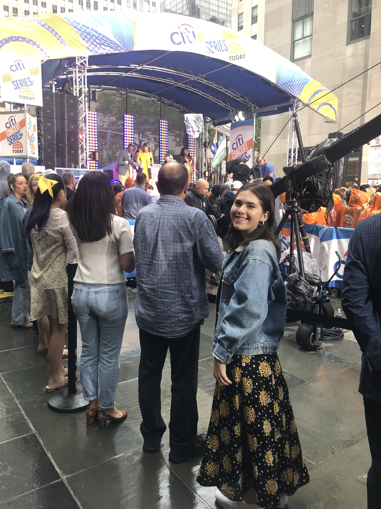

My name is Rachel Simon and I am a senior at Syracuse University. I am majoring in psychology and information management and technology but my passion is music. I am hoping to utilize the skills that I have learned to pursue a career in the music industry. This past summer I had an amazing experience working at NBC in their Music and Entertainment Booking department. I am particulary interested in working in the live event and booking sector of the music industry. I previously worked at Red Light Management when I was abroad in London and I am the assistant PR Director for University Union. "UU" as we refer to it, is the offical programming board at Syracuse University. We book concerts, comedy shows and lectures for the student body. This is how I first got involved in the music and entertainment industry and where my passion began. I am graduating from Syracuse in the Spring of 2020 and I am excited for the opportunities that are ahead of me. On this website you will get a better look into the experiences I've had with previous internships and my involvement in the music and entertainment industry overall. Sort of like the highlights of my experiences so far.